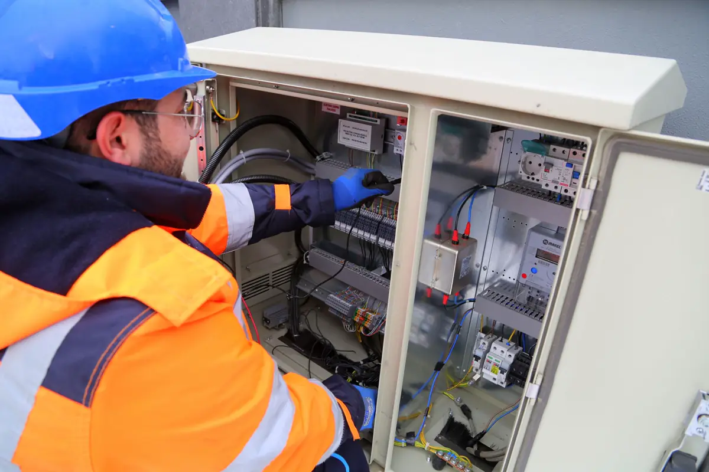
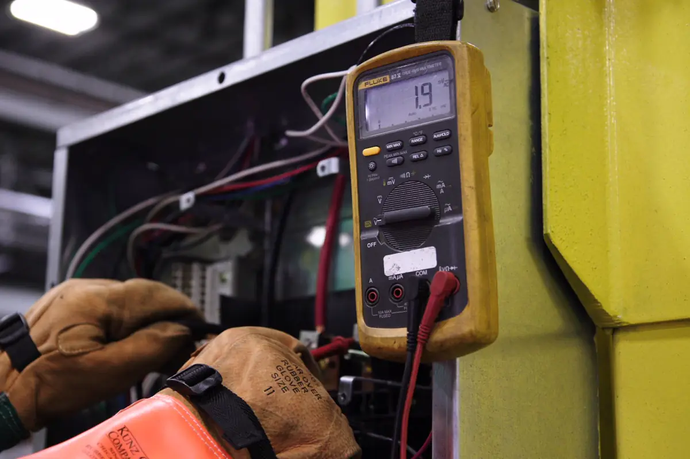
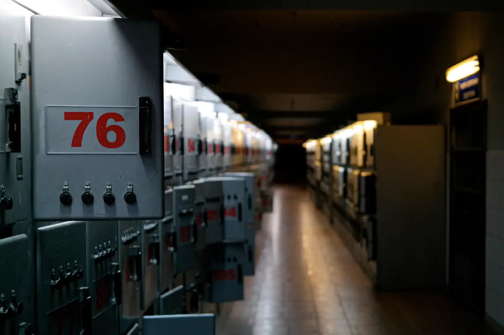

Quem precisa de prontuário e laudo NR-10
A NR-10 vale para toda empresa com instalação elétrica e trabalhador que interage com ela. Todas precisam manter diagramas unifilares atualizados e as especificações do sistema de aterramento. Quando a carga instalada passa de 75 kW — o caso de boa parte das indústrias, supermercados, hospitais, hotéis e galpões logísticos da Serra, de Cariacica e de Viana —, a norma exige o Prontuário das Instalações Elétricas, organizado e mantido por profissional habilitado.
O pedido chega por fiscalização do trabalho, exigência de seguradora, auditoria de cliente grande ou depois de um acidente. Em todos os casos, o primeiro passo é o mesmo: saber onde a instalação está.
Equipe técnica pronta para atender toda a demanda em Vitória, Vila Velha, Serra, Cariacica e região: o orçamento, o agendamento e o acompanhamento ficam centralizados na Axial Engenharia, do primeiro contato à entrega do documento.

O que tem no prontuário
- Conjunto de procedimentos e instruções técnicas e administrativas de segurança e saúde;
- Documentação das inspeções e medições do SPDA e dos aterramentos;
- Especificação dos equipamentos de proteção coletiva e individual e do ferramental;
- Comprovação de qualificação, habilitação, capacitação, autorização e treinamento dos trabalhadores;
- Resultados dos testes de isolação dos EPIs e EPCs;
- Certificações dos equipamentos em áreas classificadas, quando houver;
- Relatório técnico das inspeções atualizadas, com recomendações e cronograma de adequação.

Como é feito o diagnóstico
| Etapa | O que sai |
|---|---|
| Levantamento documental | O que existe de projeto, diagrama, laudo e treinamento |
| Inspeção de campo | Quadros, painéis, subestação, aterramento, sinalização e bloqueio |
| Atualização de diagramas | Unifilares conforme o que está instalado de fato |
| Relatório de não conformidades | Item da NR-10, foto, risco e solução |
| Plano de ação | Prioridade por risco, prazo e estimativa de custo |

NR-10, SPDA e máquinas andam juntos
O laudo de SPDA é peça obrigatória do prontuário, e os painéis das máquinas entram também na adequação NR-12. Para manter tudo isso vivo depois da entrega — vencimentos, inspeções e pendências —, o Sistema NR12 organiza a documentação de NR-12 e NR-10 em um só lugar. Quando o diagnóstico aponta quadro sem proteção ou fora de padrão, a correção passa pela montagem de quadro elétrico.
Perguntas frequentes sobre laudo NR-10 e prontuário
Toda empresa precisa de prontuário NR-10?
O prontuário das instalações elétricas é obrigatório para estabelecimentos com carga instalada superior a 75 kW. Abaixo disso, a empresa ainda precisa manter diagramas unifilares atualizados, especificações do aterramento e as demais medidas da NR-10.
Qual a diferença entre laudo NR-10 e prontuário?
O laudo, ou relatório técnico, é o diagnóstico da instalação com as não conformidades e o plano de ação. O prontuário é o conjunto organizado de documentos exigido pela norma, do qual o relatório técnico de inspeção faz parte.
De quanto em quanto tempo o prontuário é atualizado?
Ele precisa estar sempre atualizado: a cada mudança na instalação, novo treinamento ou nova inspeção. O relatório técnico de inspeção costuma ser refeito em ciclos definidos pela empresa e pelo risco da instalação.
Quem pode elaborar o prontuário NR-10?
A norma exige que a documentação seja organizada e mantida por profissional legalmente habilitado, com ART registrada no CREA-ES.
O diagnóstico para a operação da fábrica?
Na maior parte, não. A inspeção visual e documental é feita com a planta funcionando; medições e abertura de painéis energizados críticos são programadas em parada ou janela de manutenção.
NR-10 na Grande Vitória
Laudo NR-10 e prontuário para indústrias, comércios e serviços:
Fiscalização, seguradora ou auditoria pediu NR-10?
Informe a atividade, a carga instalada aproximada e o que já existe de documentação. Retornamos com escopo e valor.